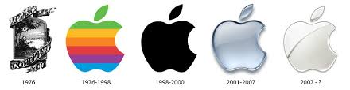
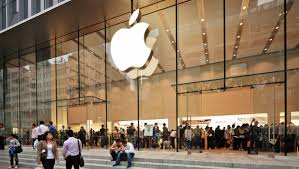

Apple
A história da Apple começou em 1976, com Steve Jobs, Steve Wozniak e Ronald Wayne, na garagem da casa de Jobs, com o objetivo de criar computadores pessoais mais acessíveis e fáceis de usar. O primeiro produto, o Apple I, foi lançado no mesmo ano, seguido pelo Apple II, que obteve mais sucesso. A empresa foi incorporada como Apple Computer, Inc. e, em 2007, mudou seu nome para Apple Inc., expandindo seu foco para além dos computadores. Atualmente, a Apple é uma das maiores empresas de tecnologia do mundo, conhecida por seus produtos inovadores e design elegante.
A filosofia da empresa sempre priorizou experiência do usuário, design minimalista, performance e ecossistema integrado. O sistema operacional iOS, por exemplo, funciona de forma fluida com outros dispositivos da marca, como o macOS, iPadOS e watchOS, promovendo uma conectividade quase invisível.
O Sucesso Global
Com o passar dos anos, a Apple se reinventou diversas vezes. Um dos seus maiores marcos foi o lançamento do iPod, em 2001, que transformou a forma como as pessoas ouviam música. Porém, o verdadeiro divisor de águas foi o iPhone, lançado em 2007, que inaugurou a era dos smartphones modernos. Desde então, produtos como o iPad, Apple Watch, AirPods e os computadores MacBook🔗 têm reforçado a reputação da empresa como referência em design, inovação e integração entre hardware e software. Além dos produtos físicos, a Apple também atua fortemente em serviços digitais, como a App Store, Apple Music, iCloud, Apple TV+, e mais recentemente, o Apple Vision Pro, um dispositivo de computação espacial com foco em realidade aumentada.
Steve Jobs
Steve Jobs (1955-2011) foi um dos maiores visionários e inovadores da era digital. Cofundador da Apple Inc., ele transformou indústrias inteiras da computação pessoal ao cinema de animação, da música digital aos smartphones com sua visão única de unir tecnologia, design e simplicidade.

Jobs era conhecido por seu perfeccionismo, seu talento em apresentações, e seu foco obsessivo na experiência do usuário. Mais do que um empresário, ele era um criador de tendências e um símbolo da união entre arte e tecnologia.
Hoje, com sede em Cupertino, Califórnia, e liderada por Tim Cook, a Apple é uma das marcas mais valiosas do mundo e continua sendo um símbolo de inovação tecnológica, design sofisticado e lealdade de marca.